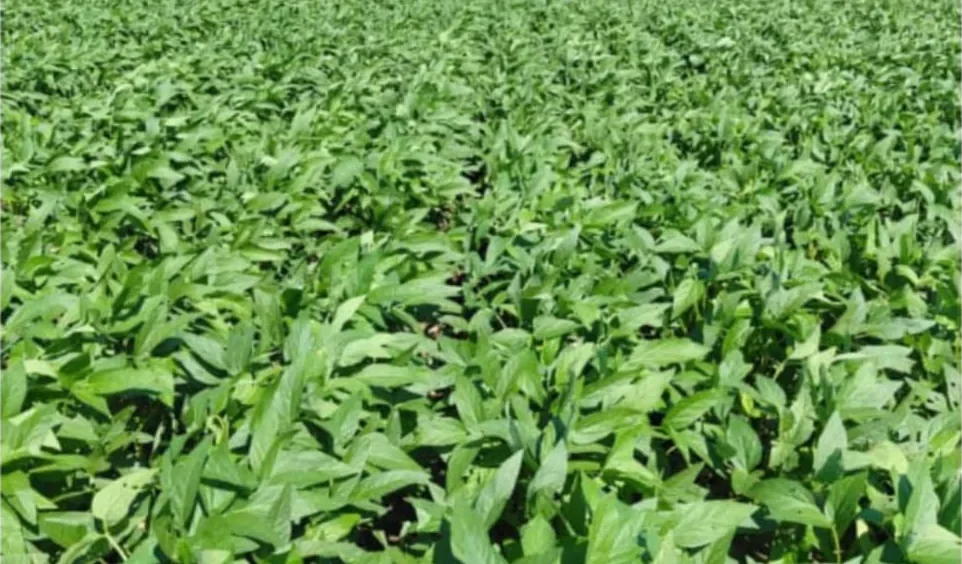
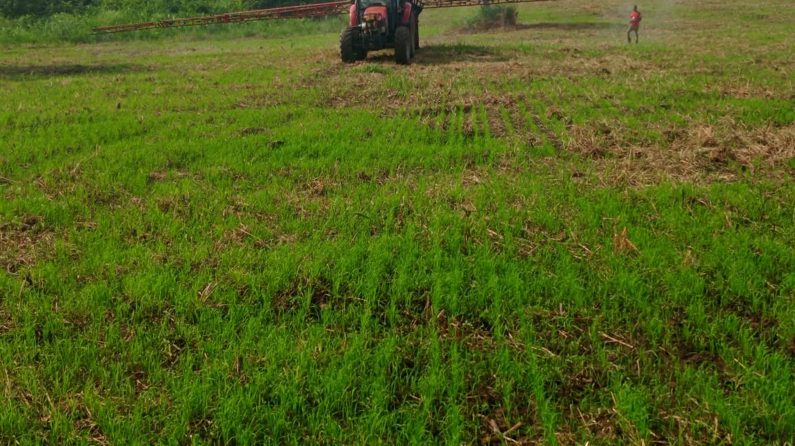
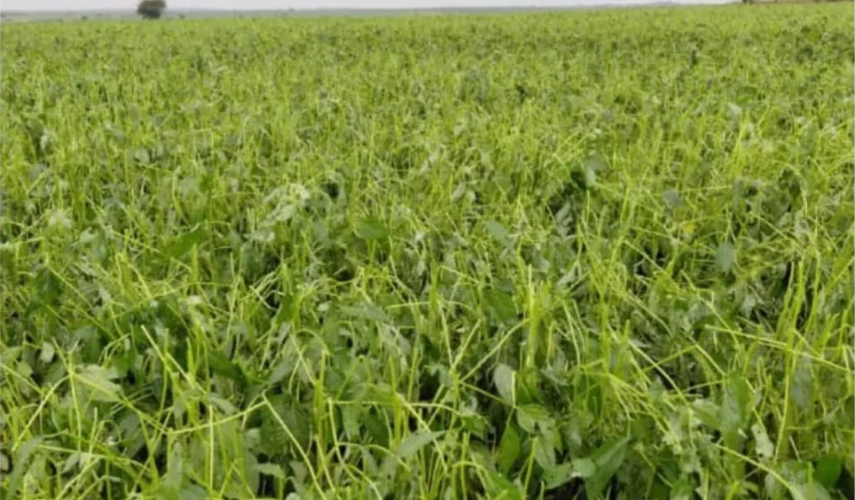
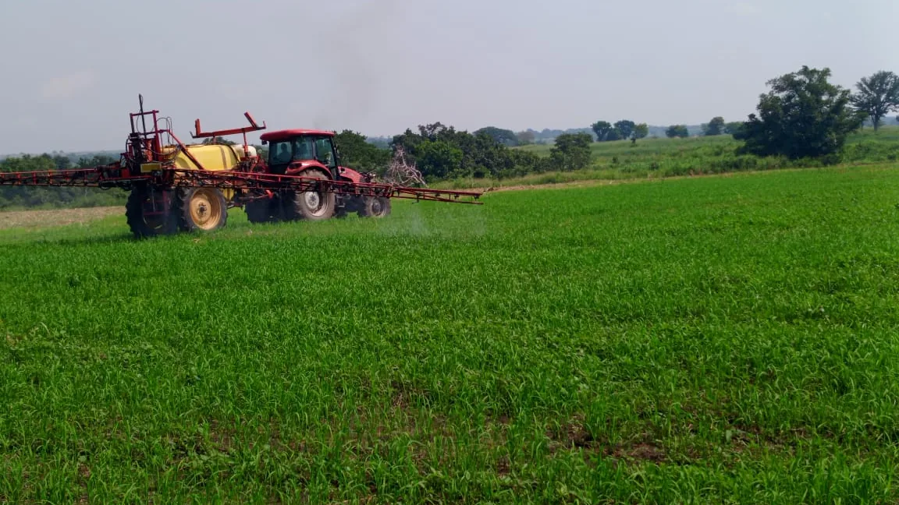
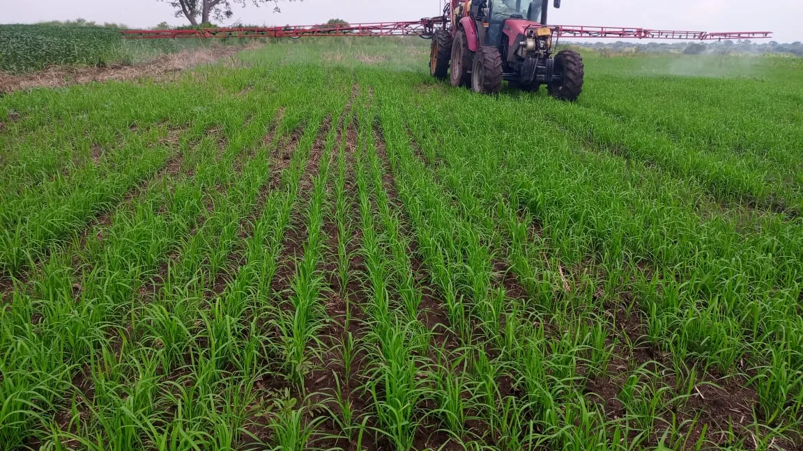

Six crops, two seasons, one farm.
Maize, soya beans, rice, sesame, sorghum and millet, grown on Normah's own land in Amuru District. Wheat is planned as a future addition.

Maize
Season A & BFeed and food grade, grown across both seasons.

Soya beans
Season A & BOilseed and feed markets, rotated with cereals.

Rice
Season BGrown in the wetter half of the year, borehole-supported.

Sesame
Season BAlso called simsim — part of Normah's six-crop breadth.

Sorghum
Season A & BDrought-tolerant cereal grown across both seasons.

Millet
Season AA traditional northern Uganda cereal in the rotation.
Compare the six crops
| Crop | Season(s) | Planting window | Harvest window | Primary market | Packaging |
|---|---|---|---|---|---|
| Maize | A & B | Early in each season | Mid–late in each season | Export & regional trade | 50 kg bags |
| Soya beans | A & B | Early in each season | Mid–late in each season | Export | 50 kg bags |
| Rice | B | Early Season B | Late Season B | Export & regional trade | 50 kg bags |
| Sesame | B | Early–mid Season B | Late Season B | Export (simsim) | 50 kg bags |
| Sorghum | A & B | Early in each season | Mid–late in each season | Regional & export trade | 50 kg bags |
| Millet | A | Early Season A | Mid–late Season A | Regional trade | 50 kg bags |
Planned addition
Wheat Planned
Not yet in production. Will appear here with a full specification page once planting begins.